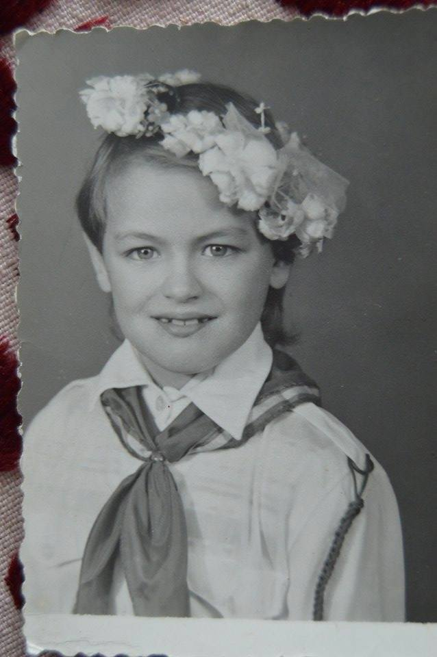
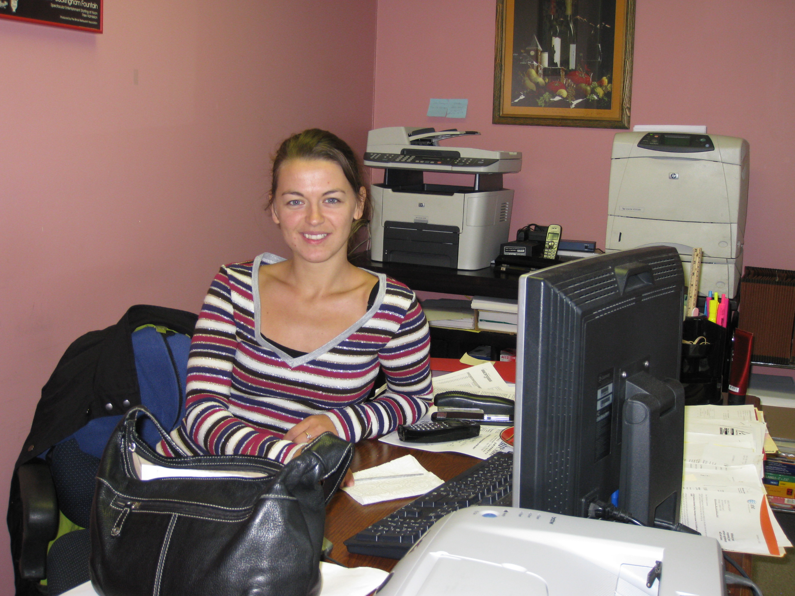

My values
The triple A's in my values: Achievement, Adventure, Accountabilty
07/10/15
During my schooling years up to my senior year I've been awarded first in class award (well, except for the 7th grade when a colleague snatched it from me, but I showed her the following year :D). This was the "achievement" part of my life. To date, I still have great achievements (eg: DevBootcamp), but it is all thanks to the foundation laid during my schooling years. Here's a goofy proof of those times:

During my college years I was fortunate to find about a great hiking group - The Troubadour Bear - and I travelled a lot with them. These were the most adventurous days of my life. The picture below is just one of the dozens of trips we took:
Adult life came around and first serious job with it :). I was surprised to discover that I thrive in an unstructured environment which offered me a lot of initiative taking and decision making opportunities. I had entered the "Accountability" phase of my life. Here's a pic for you to check:

What lies ahead of me? Looming over is the fearsome world of coders :). I shied away from it once (I majored in programming in high-school, but followed the trend of womens quiting the coding world). I have my self confidence ... and the pictures I put above to remind me that I am strong and will make it. Wouldn't hurt though if you wished me luck too ;) .